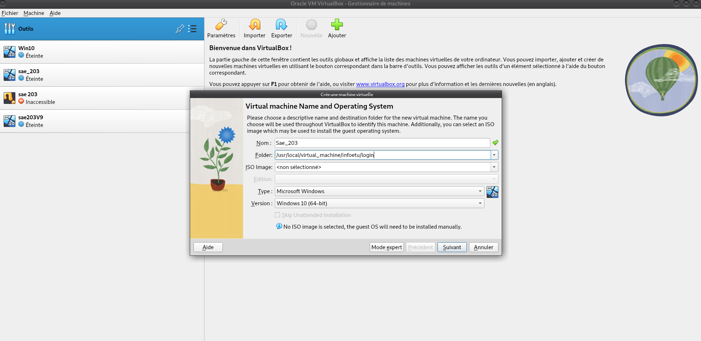
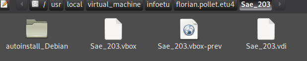
Ensuite,placez-vous dans le dossier autoinstall_Debian depuis votre terminal et tapez la commande suivante : “sed -i -E”s/(–iprt-iso-maker-file-marker-bourne-sh).*$/\1=$(cat /proc/sys/kernel/random/uuid)/” S203-Debian12.viso”
Une fois cela fait,placez l’iso Debian 12 dans la machine virtuelle(l’iso est présent dans le dossier autoinstall_Debian) comme i-dessous en appuyant sur “choose disk file”:
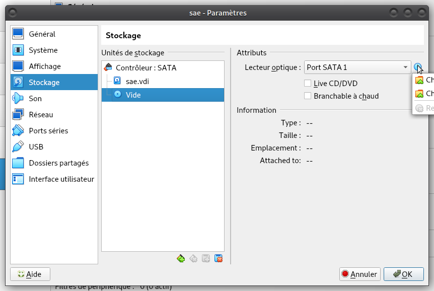
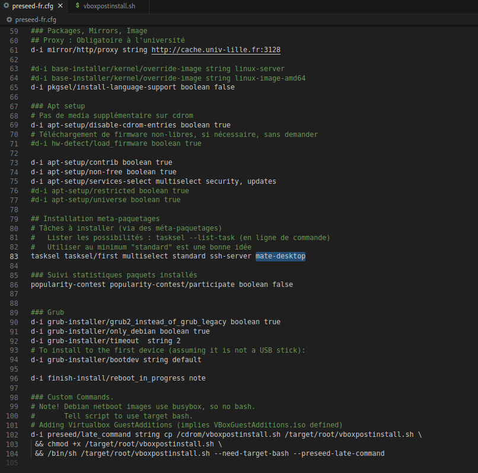
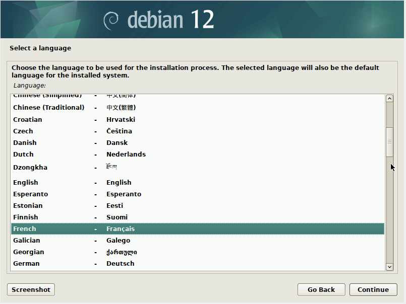
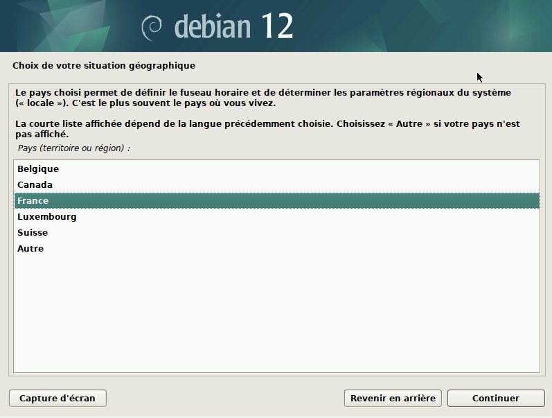
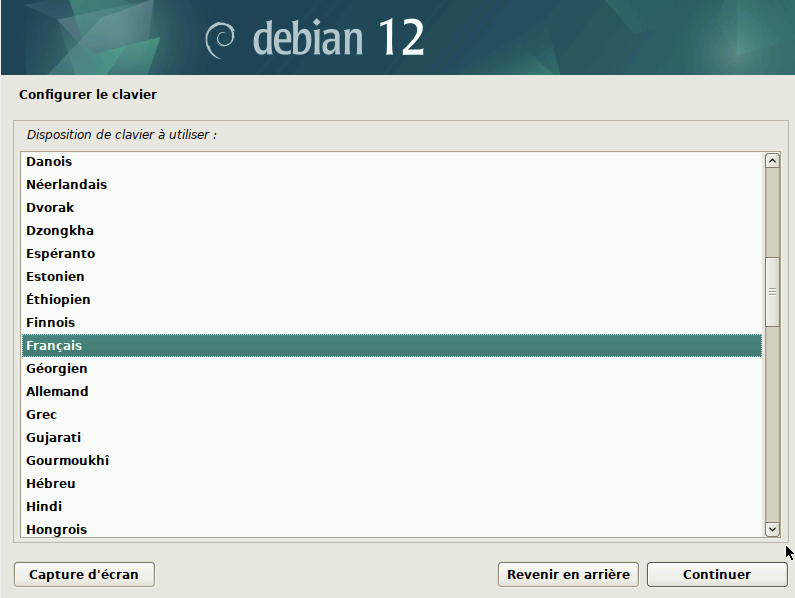
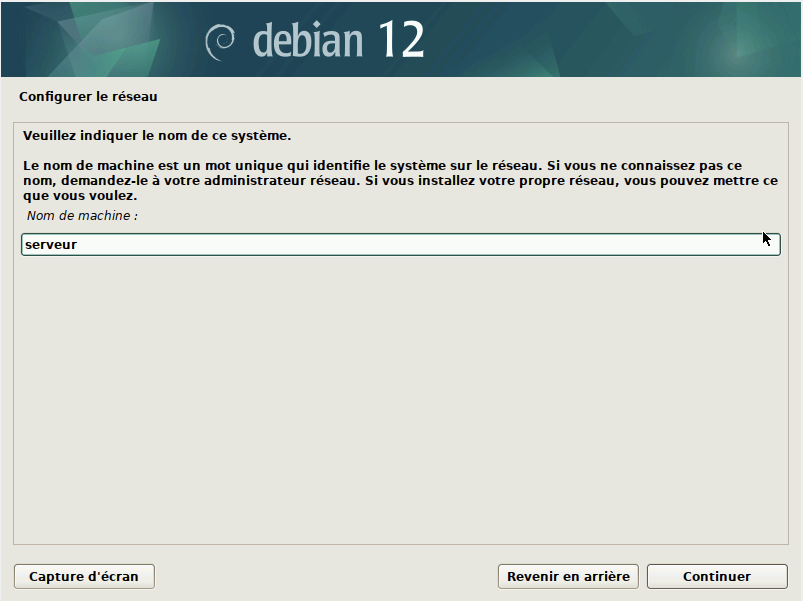
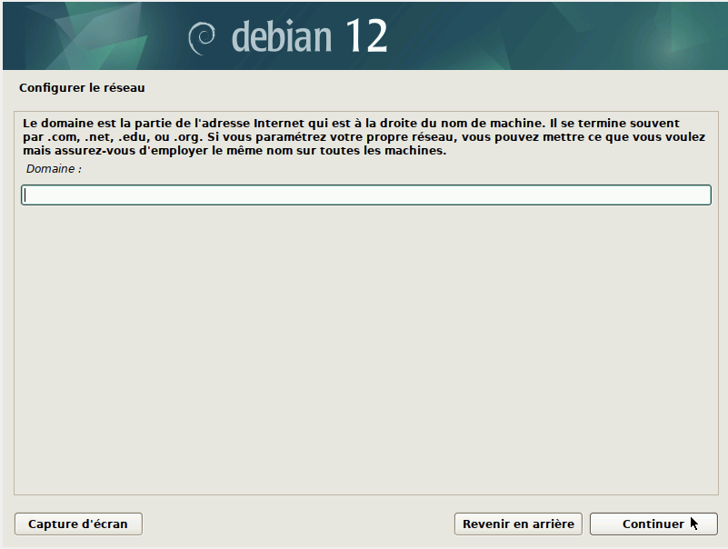
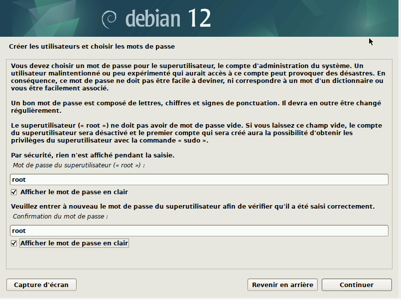
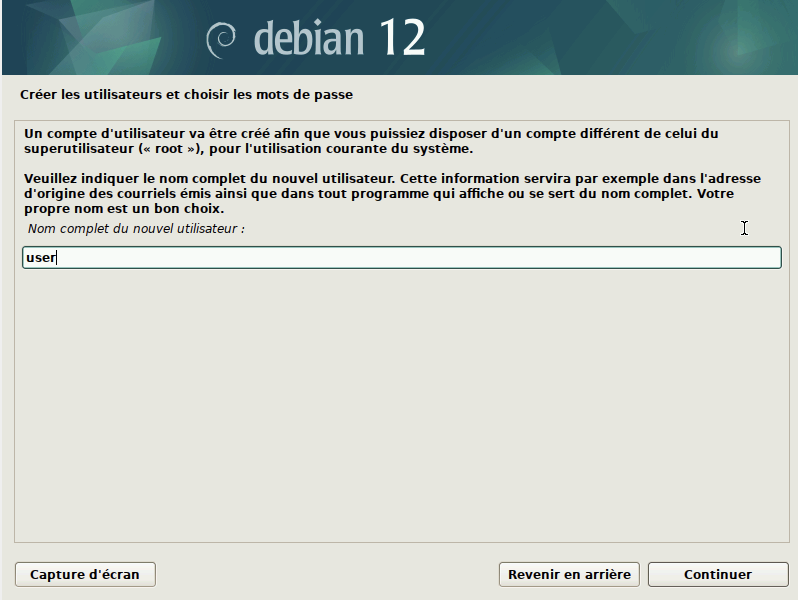
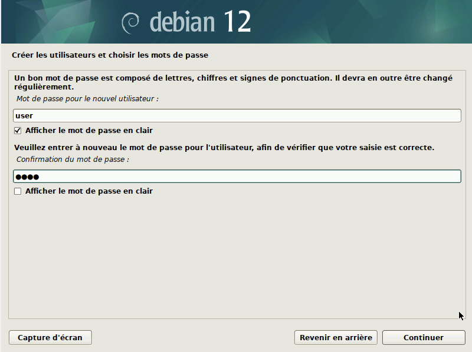
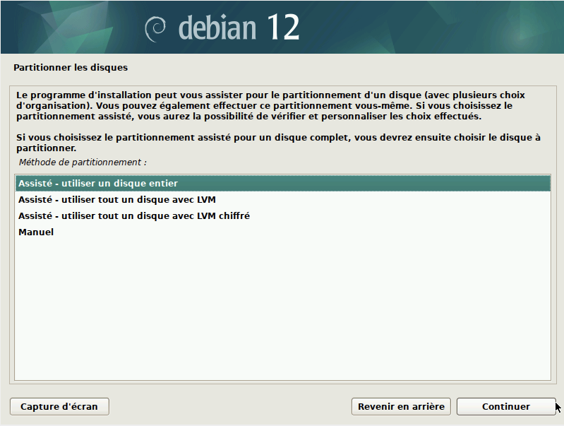
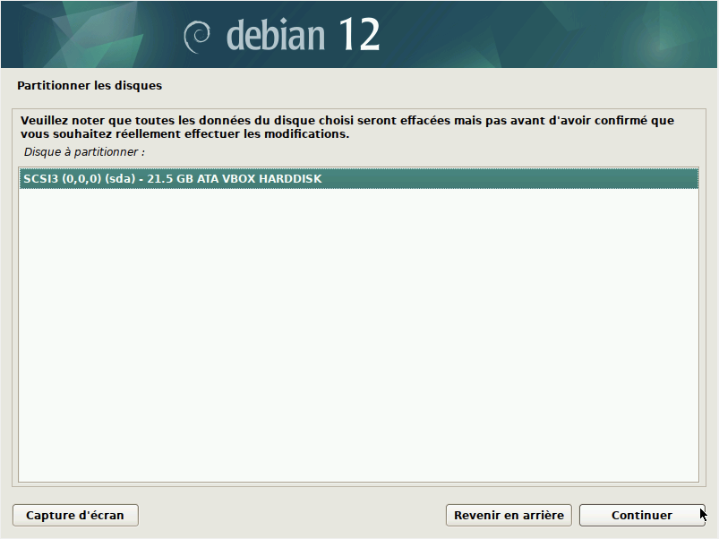

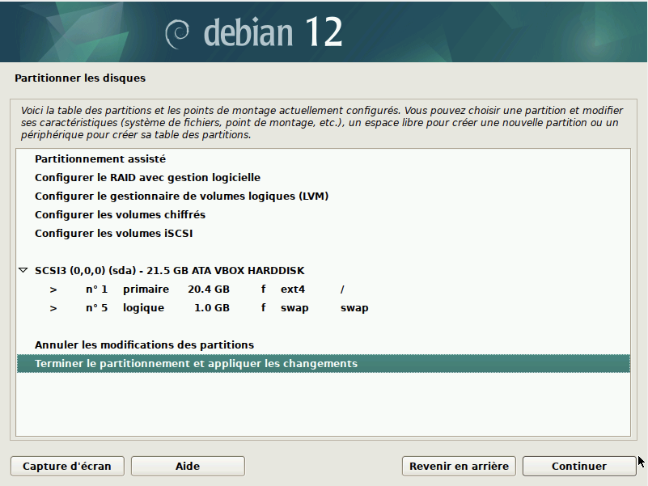
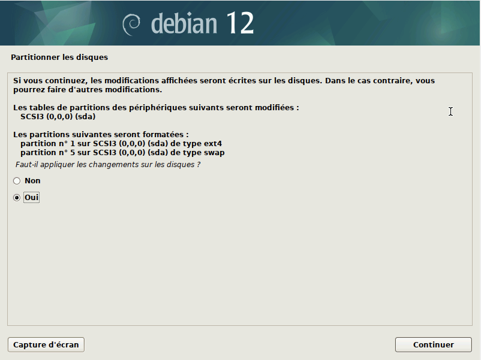
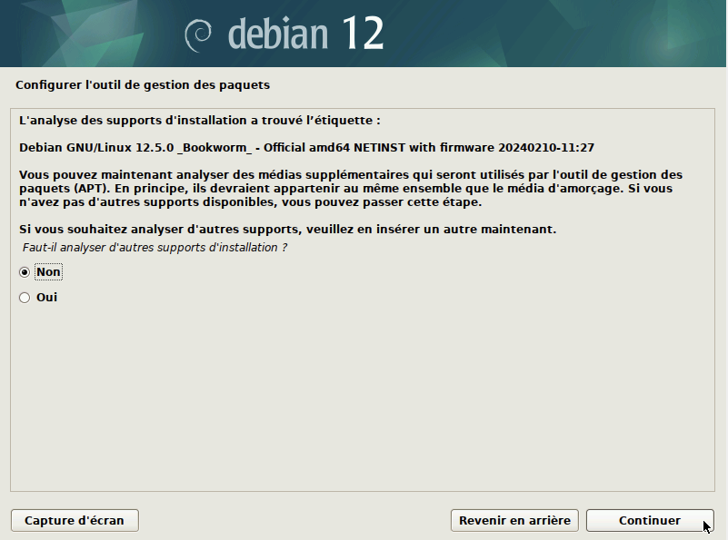
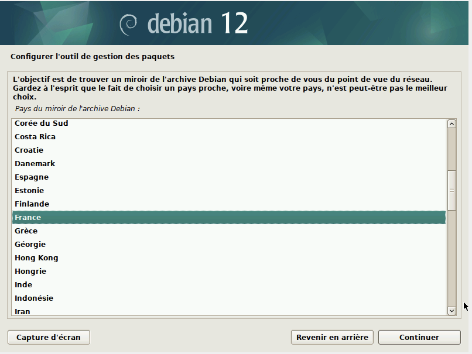
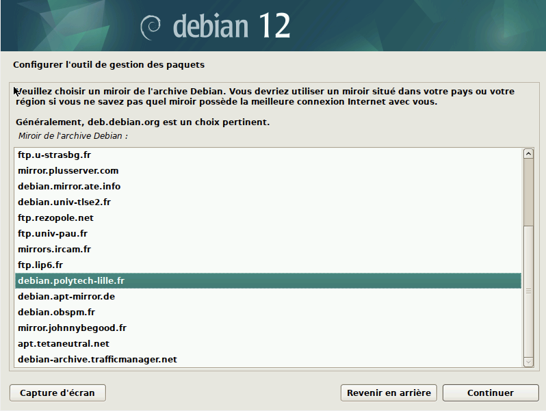
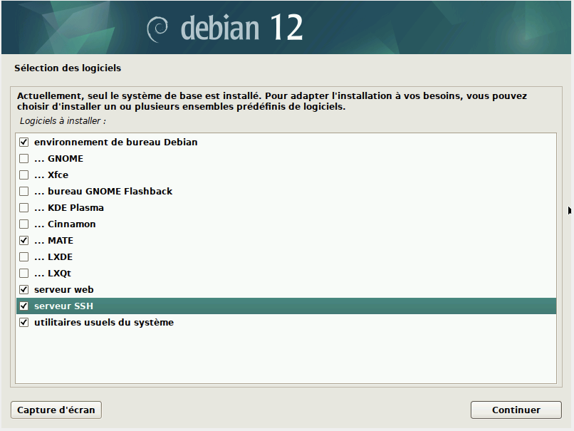
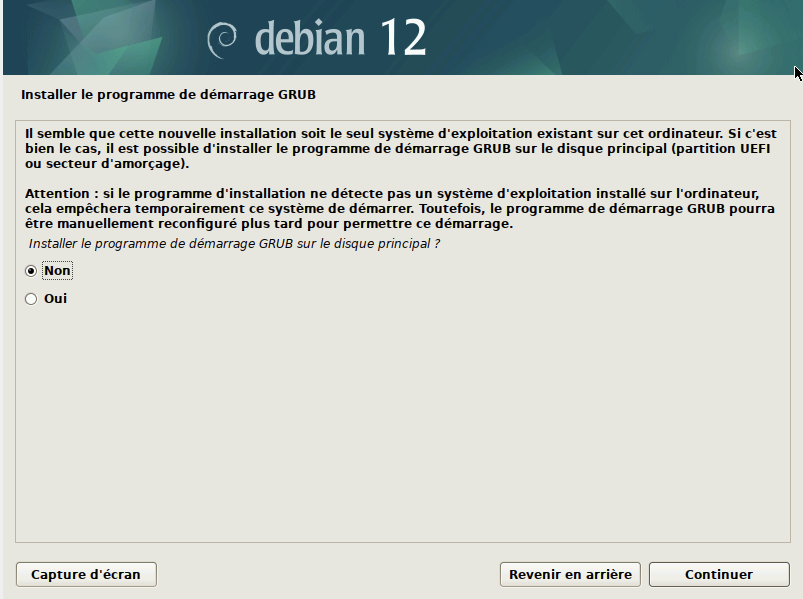
Dans le cas ou une demande du type [0/n] se propose, répondez “o” oui “0”, c’est une confirmation.
| Commande | Fonction |
|---|---|
| sudo apt update | Met à jour “apt” |
| apt install git-all | Installe toutes les configurations et fichiers de git |
| apt install sudo | Installe la fonction de “sudo” |
| apt install neofetch | Installe Neofetch |
| apt-get install sqlite3 | Installe SQLite3 |
| apt-get install curl | Installe Curl |
| apt-get install bash-completion | Installe Bash-completion |
| sudo usermod -aG sudo user | Donne les droits sudo à l’utilisateur |
Qu’est ce que GITEA ?
GITEA est un logiciel de gestion de versions GIT.
A quoi peut t-on comparer GITEA ?
GITEA est comparable à GITHUB ou encore GITLAB.
Dans un premier nous allons faire la commande ci-dessous affin de faire un nouvel utilisateur git ainsi qu’un groupe git: “adduser –system –group –disabled-password –shell /bin/bash –home /home/git –gecos ‘Git Version Control’ git”.
puis pour être d’avoir la bonne version de wget.
apt install wget
sudo mv /tmp/gitea /usr/local/bin
wget -O /tmp/gitea https://dl.gitea.io/gitea/1.15.3/gitea-1.15.3-linux-amd64.
sudo mv /tmp/gitea /usr/local/bin
chmod +x /usr/local/bin/gitea
mkdir -p /var/lib/gitea/{custom,data,indexers,public,log}
chown git: /var/lib/gitea/{data,indexers,log}
chmod 750 /var/lib/gitea/{data,indexers,log}
mkdir /etc/gitea
chown root:git /etc/gitea
vchmod 770 /etc/gitea
wget https://raw.githubusercontent.com/go-gitea/gitea/master/contrib/systemd/gitea.service -P /etc/systemd/system
systemctl daemon-reload
systemctl enable --now gitea
sudo mv /tmp/gitea /usr/local/bin
chmod +x /usr/local/bin/gitea
mkdir -p /var/lib/gitea/{custom,data,indexers,public,log}
chown git: /var/lib/gitea/{data,indexers,log}
chmod 750 /var/lib/gitea/{data,indexers,log}
mkdir /etc/gitea
chown root:git /etc/gitea
vchmod 770 /etc/gitea
wget https://raw.githubusercontent.com/go-gitea/gitea/master/contrib/systemd/gitea.service -P /etc/systemd/system
systemctl daemon-reload
systemctl enable --now giteamaintenant vous allez aller sur : http://localhost:3000/
Vous y choisirez SQLite3 pour le type de base de données.
Et en chemin vous prendrez un chemin absolut menant vers “/var/lib/gitea/data/gitea.db”
Que signifie “64-bit” dans “Debian 64-bit” ?
Les 64 bits correspondent à la façon dont le processeur d’un ordinateur (également appelé CPU) gère les informations.
Quelle est la configuration réseau utilisée par défaut ?
127.0.0.1/8
Quel est le nom du fichier XML contenant la configuration de votre machine ?
Le fichier est :Sae_203.vbox-prev
Sauriez-vous le modifier directement ce fichier de configuration pour mettre 2 processeurs à votre machine ?
Oui en modifiant le code suivant : <CPU count=“1”/> en <CPU count=“2”/>
Qu’est-ce qu’un fichier iso bootable ?
En effet un fichier ISO est juste un fichier image créé à partir d’un CD ou d’un DVD (des logiciels, des jeux, etc.). Vous pouvez donc transformer votre clé USB pour qu’elle se comporte en CD ou DVD. Le seul moment où elle a besoin d’être bootable c’est si vous mettez l’ISO d’un système d’exploitation dessus.
Qu’est-ce que MATE ? GNOME ?
MATE (prononcer maté à l’espagnole) est un environnement de bureau libre utilisant (dans un premier temps) la boîte à outils GTK+ 3.x et destiné aux systèmes d’exploitation apparentés à UNIX. Il consiste en un fork de GNOME et son nom vient du yerba maté dont les feuilles sont utilisées pour préparer une boisson stimulante en Amérique latine 3 .
Qu’est-ce qu’un serveur web ?
Un « serveur web » peut faire référence à des composants logiciels (software) ou à des composants matériels (hardware) ou à des composants logiciels et matériels qui fonctionnent ensemble.
Qu’est-ce qu’un serveur SSH ?
SSH, ou Secure Socket Shell, est un protocole réseau qui permet aux administrateurs d’accéder à distance à un ordinateur, en toute sécurité. SSH désigne également l’ensemble des utilitaires qui mettent en œuvre le protocole.
Qu’est-ce qu’un serveur mandataire ?
Un serveur mandataire ou proxy (de l’anglais) est un serveur informatique qui a pour fonction de relayer des requêtes entre un poste client et un serveur. Les serveurs mandataires sont notamment utilisés pour assurer les fonctions suivantes :
L’utilité des serveurs mandataires est importante, notamment dans le cadre de la sécurisation des systèmes d’information pour ces questions, vous devrez trouver les réponses dans la documentation officielle et nous
À quoi servent les suppléments invités ? Donner 2 principales raisons de les installer.
Elles permettent : D’améliorer l’affichage graphique. De partager le presse-papier entre la machine virtuelle et la machine hôte. La possibilité de partager des répertoires entre la machine virtuelle et la machine hôte.
À quoi sert la commande mount (dans notre cas de figure et dans le cas général)
La commande mount permet de demander au système d’exploitation de rendre un système de fichiers accessible, à un emplacement spécifié (le point de montage). La commande mount monte un système de fichiers indiqué comme répertoire à l’aide du paramètre Noeud:Répertoire, sur le répertoire spécifié par le paramètre Répertoire. Une fois la commande mount exécutée, le répertoire indiqué devient le répertoire racine du nouveau système de fichiers monté. Si vous entrez la commande mount sans option, elle affiche les informations suivantes sur les systèmes de fichiers montés :
Vous pouvez utiliser le répertoire /mnt comme point de montage local ou vous pouvez créer un répertoire à l’aide de la commande mkdir. Tout répertoire créé à l’aide de la commande mkdir doit être un sous-répertoire de votre répertoire d’accueil.
Quel est la version du noyau Linux utilisé par votre VM ? N’oubliez pas, comme pour toutes les questions, de justifier votre réponse.
Debian 12 version la plus simple à trouver de par le fait que lien de téléchargement sur la page principal de debian télécharge la version 12.
1.Qu’est-ce que le Projet Debian ? D’où vient le nom Debian ?
La maintenance Le projet Debian est un groupe mondial de volontaires qui s’efforcent de produire un système d’exploitation qui soit composé exclusivement de logiciels libres. Le principal produit de ce projet est la distribution Debian GNU/Linux, qui inclut le noyau Linux ainsi que des milliers d’applications pré empaquetées. Divers types de processeurs sont gérés à des degrés divers, en incluant les architectures x86 32 ou 64 bits, ARM, MIPS, PowerPC et IBM S/390. Le nom Debian est issu des prénoms du créateur de cette distribution GNU Linux Ian Murdock et de son épouse Debra.
https://fr.wikipedia.org/wiki/Debian
2.Il existe 3 durées de prise en charge (support) de ces versions : la durée minimale, la durée en support long terme (LTS) et la durée en support long terme étendue (ELTS). Quelle sont les durées de ces prises en charge ?
| version de prise en charge | durée |
|---|---|
| LTS | 2 ans |
| Standard | 5 ans |
| ELTS | 5 ans |
https://wiki.debian.org/fr/LTS
3.Pendant combien de temps les mises à jour de sécurité seront-elles fournies ?
Elles sont fait trois années après la publication.
4.Combien de versions au minimum sont activement maintenues par Debian ? Donnez leur nom générique (= les types de distribution).
3 versions
https://wiki.debian.org/fr/LTS
5.Chaque distribution majeur possède un nom de code différent. Par exemple, la version majeur actuelle (Debian 12) se nomme bookworm. D’où viennent
Les différents noms proviennent des noms des jouets de la saga TOY STORY.
https://en.wikipedia.org/wiki
6.L’un des atouts de Debian fut le nombre d’architecture (≈processeurs) officiellement prises en charge. Combien et lesquelles sont prises en charge par la version Bullseye ?
Il y a 9 architecture pris en charge par la version Bullseye:
https://www.debian.org/releases/bullseye/arm64/release-notes/ch-whats-new.fr.html#idm120
7.Première version avec un nom de code
Quelle a était le premier nom de code utilisé ?
Quand a-t-il été annoncé ?
Quelle était le numéro de version de cette distribution ?
8.Dernière nom de code attribué
Bookworm
23 avril 2022
La version 12
Gitk est un navigateur de dépôt graphique, le premier de son genre. Il peut être considéré comme un encapsuleur graphique pour git log . Il permet d’explorer et de visualiser l’historique d’un dépôt. Gitk se lance en effectuant la commande suivante “gitk &”, il sera affecté au dossier dans lequel vous l’utilisez.
Git GUI. C’est un des outils de base fourni avec Git lors de son installation. Il va vous permettre entre autre de voir le diff des modifications en cours dans votre workspace ou encore de faire des commits et des pushs et bien plus encore.Pour lancer git-gui, effectuez la commande suivante “git citool”.
La version utilisé de GITEA peut être grâce à la commande :
VERSION=<THE_LATEST_GITEA_VERSION>
Pour pouvoir mettre à jour le binaire du service sans devoir tout reconfigurer il faut utiliser la commande :
wget -O /tmp/gitea https://dl.gitea.io/gitea/${VERSION}/gitea-${VERSION}-linux-amd6
cependant la version 1.22-dev n'existe pasLe majeur problème que nous avons renconté est la gestion du temps ainsi l’automatisation de la machine virtuelle ainsi que l’installation de Gitea.